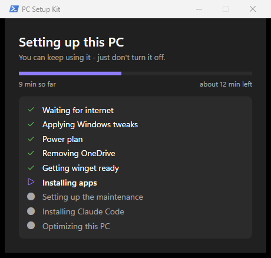
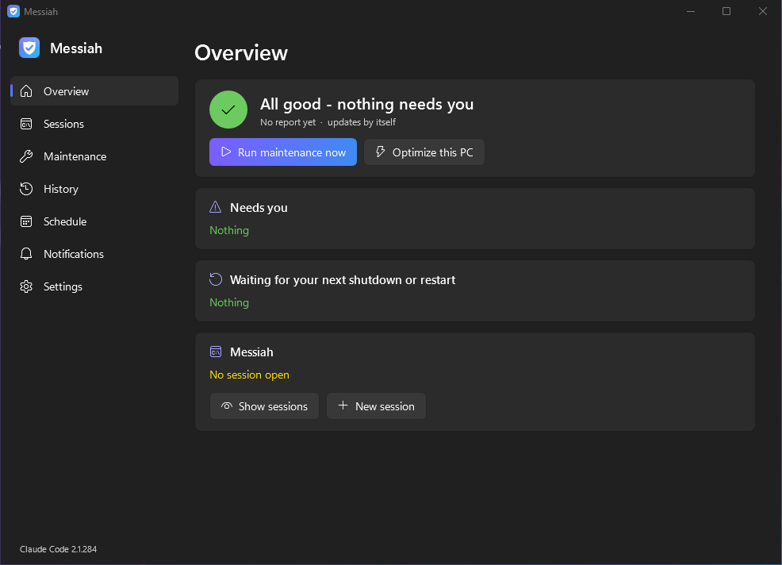
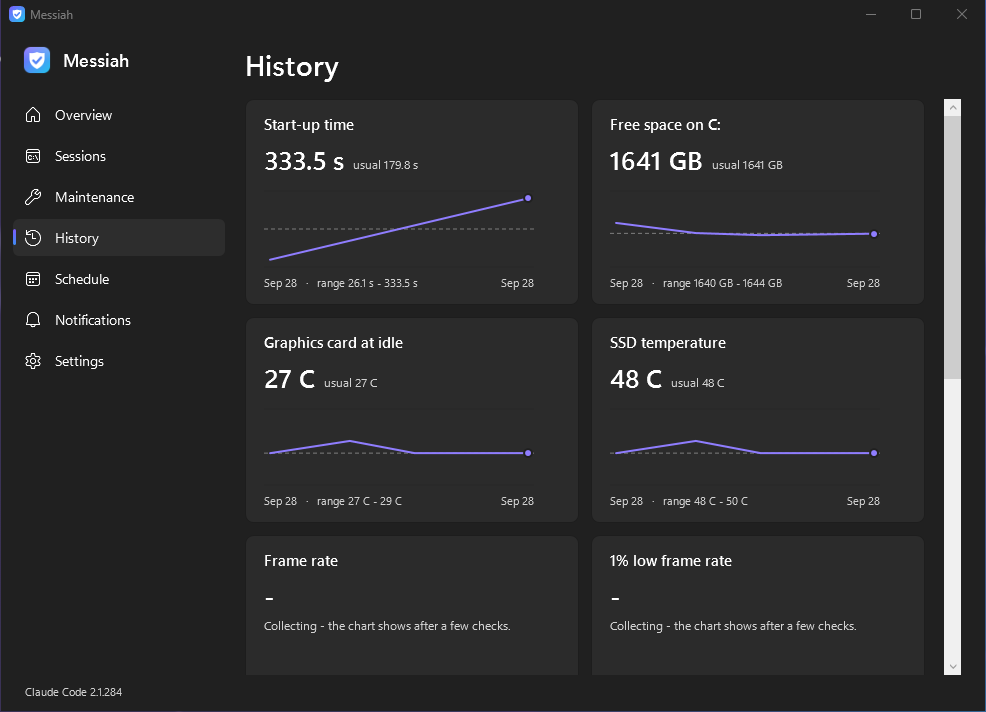

Messiah
One click turns a Windows 11 PC into a tuned, debloated gaming PC that then looks after itself: drivers, updates, crash checks and cleanup, all automatic. No account needed - an AI assistant (Claude) is an optional switch in the app.
Install
- Open the downloaded file. If your browser asks, choose Keep.
- If Windows shows "Windows protected your PC", click More info, then Run anyway. This shows up because the file isn't signed by a paid certificate.
- Click Yes when it asks for administrator rights, read what it will do, then type
YES. - Wait 15-30 minutes. It tweaks Windows, installs the apps, optimizes the PC, then the app opens with a welcome page showing what it did.
Afterwards the Messiah app (Start menu and desktop, the icon in the hidden tray next to the clock, or Ctrl+Alt+M) shows what the PC is doing and anything that needs you. Every change it makes can be switched off in its Settings, and it can uninstall itself from there. It never restarts your PC by itself.
Installing Windows from scratch
For a new PC, or to wipe and reinstall one: a USB stick (8 GB or bigger) that installs Windows 11 and sets the PC up by itself.
- On any Windows PC, open the downloaded file and pick the USB stick. It downloads Windows 11 from Microsoft (about 7 GB) and puts the kit on the stick: 20-40 minutes. (Already have the kit? The app's Maintenance page has the same button, and it can put your settings on the stick too.)
- Plug the stick into the new PC, turn it on and press the boot-menu key (often F8, F11 or F12). Pick the USB.
- Choose the language, then the drive to install on. That's the one screen to be careful on: delete the old partitions only on the drive you want wiped.
- After a few restarts, pick a username and password (no Microsoft account needed). At the desktop a "Setting up this PC" window shows the progress. Keep the stick in until it says it's finished.
What you'll see



What it does
- Removes Windows bloat and ads, turns off telemetry and the built-in AI features, applies gaming tweaks.
- Turns memory integrity (VBS) off for gaming performance, which is a small security trade-off.
- Installs Git, Steam, Discord, Chrome, WinDbg and AutoHotkey, plus the NVIDIA App on NVIDIA cards.
- At every login and once a day, in the background: driver and app updates, cleanup, crash checks and a self-test. It holds off while you play.
- Sets every monitor to its native resolution and highest refresh rate, measures your games' frame rate and temperatures while you play, watches the network, and backs up your settings (wallpaper, dark mode, game settings) so a reinstall brings them back.
- Updates itself, but only to versions that passed a full test install first.
Prefer a command?
Open PowerShell and paste:
irm https://github.com/Kevincxv/pc-setup-kit/releases/latest/download/install.ps1 | iex
Remove it any time with C:\PCSetupKit\uninstall.ps1 (add -RevertTweaks to put the Windows settings back).